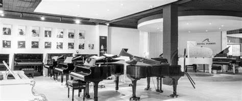
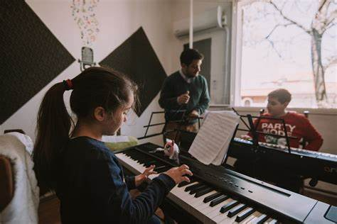
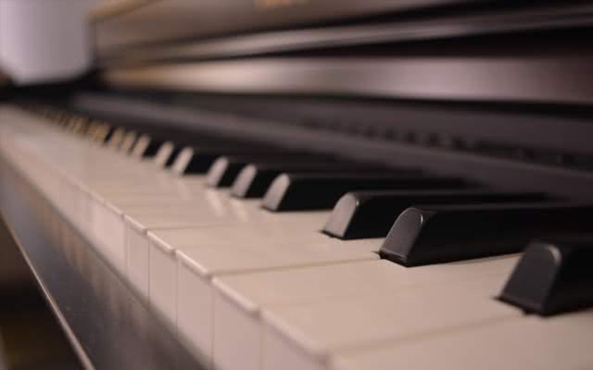
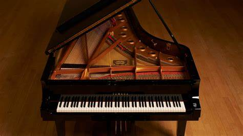
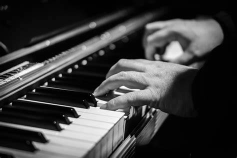

Quiénes Somos
 En el año 2004, nació A Toda Tecla, una pequeña tienda con un sueño grande: convertirse en el corazón musical de la comunidad. Su fundadora, apasionada por la música desde temprana edad, sintió la necesidad de crear un espacio que celebrara la magia de los instrumentos con teclas. Desde un principio, el objetivo fue claro: ofrecer a los músicos de todas las edades un lugar donde encontrar no solo instrumentos de calidad, sino también inspiración y conexión con otros amantes de la música.
Lo que comenzó como una tienda especializada en pianos acústicos, teclados electrónicos, sintetizadores y órganos, pronto se convirtió en un punto de encuentro para músicos principiantes y avanzados. La filosofía detrás de cada elección en el catálogo fue siempre garantizar calidad, variedad y accesibilidad. Cada instrumento era seleccionado cuidadosamente, pensando en las necesidades y sueños de quienes lo utilizarían.
 Con el tiempo, A Toda Tecla no solo ganó reconocimiento por sus productos, sino también por su compromiso con el crecimiento musical de la comunidad. Fue en 2020, después de 16 años de atender a músicos y familias, cuando decidieron dar un paso más allá: abrir las puertas de su espacio para ofrecer clases particulares de música. Este nuevo capítulo fue diseñado para enseñar tanto a niños pequeños, que daban sus primeros pasos en la música, como a adultos de cualquier nivel que quisieran perfeccionar su técnica o simplemente disfrutar del aprendizaje.
Hoy en día, la misión de A Toda Tecla sigue siendo la misma: hacer que la música sea accesible y significativa para todos. Más que una tienda, es un lugar donde cada tecla tocada representa un sueño, una pasión o una historia por contar. Es el sitio donde músicos de todos los niveles encuentran apoyo, inspiración y un camino para crecer.
 Desde su fundación hasta hoy, A Toda Tecla no solo vende instrumentos, sino que fomenta una cultura musical vibrante, inspirando a generaciones a descubrir y disfrutar del arte de la música.
Visión y Valores
 En A Toda Tecla, nuestra visión es ser un faro musical en la comunidad, un lugar donde cualquier persona, sin importar su edad o nivel, pueda conectarse con la música y desarrollar su talento. Queremos seguir creciendo como una tienda líder en instrumentos de teclas, pero también como un centro que fomente la creatividad, el aprendizaje y la pasión por la música.
Nuestros valores guían cada acción y decisión que tomamos:
- Pasión por la Música: Creemos en el poder transformador de la música y trabajamos para que todos puedan experimentarlo.
- Calidad y Profesionalismo: Seleccionamos los mejores instrumentos y contamos con un equipo altamente capacitado para garantizar la mejor experiencia.
- Inclusión y Accesibilidad: La música es para todos, por eso adaptamos nuestras ofertas a diferentes edades, niveles y presupuestos.
- Innovación: Nos esforzamos por estar a la vanguardia, incorporando las últimas tendencias e instrumentos en nuestro catálogo.
- Compromiso con la Comunidad: No solo vendemos instrumentos, sino que creamos un espacio de aprendizaje, conexión y crecimiento para los músicos de hoy y mañana.
 Cada uno de estos valores forma el núcleo de nuestra misión y refleja nuestro compromiso con nuestros clientes. Desde principiantes hasta músicos avanzados, todos encuentran en A Toda Tecla un lugar donde sus sueños musicales pueden crecer y florecer. Nuestro objetivo es seguir inspirando a generaciones, convirtiendo cada tecla en una puerta hacia la creatividad y la conexión humana.
Un vistazo a nuestra pasión por la música
Descubre cómo la música transforma vidas en este video inspirador, que captura la esencia de A Toda Tecla. Aprende más sobre nuestra misión, nuestras clases y cómo cada nota puede contar una historia.
Este video se utiliza con fines educativos y no comerciales. El contenido original fue tomado de YouTube, y el enlace al video original es: https://www.youtube.com/watch?v=sdduPpnqre4. Todos los derechos del contenido pertenecen a sus respectivos autores y propietarios.